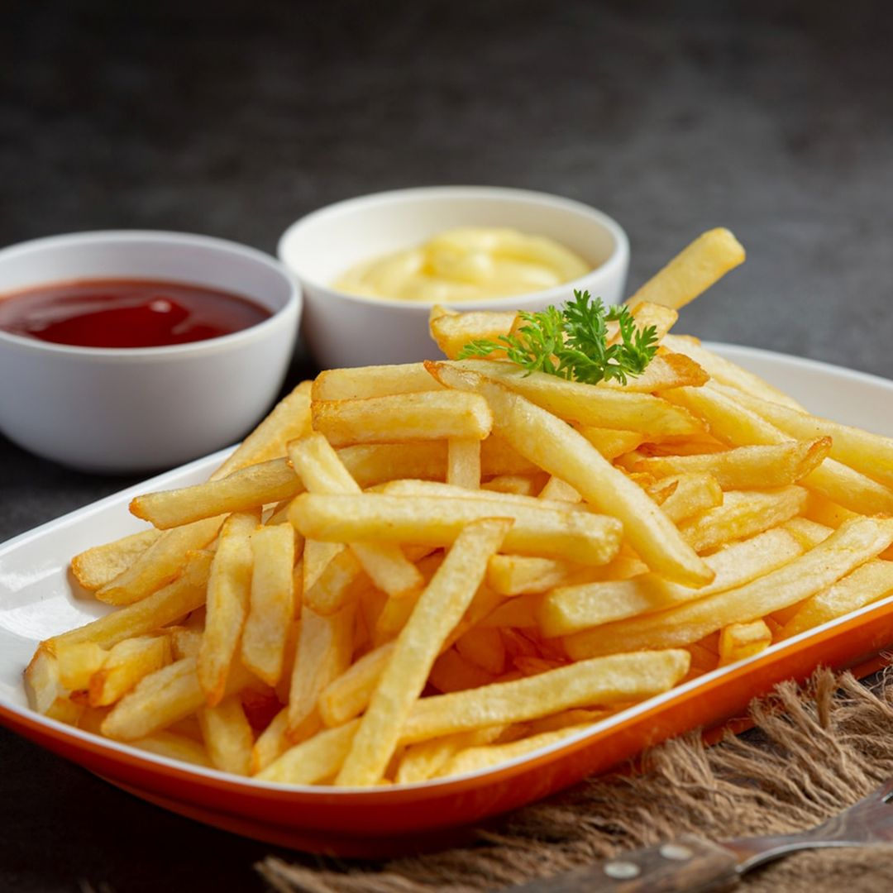
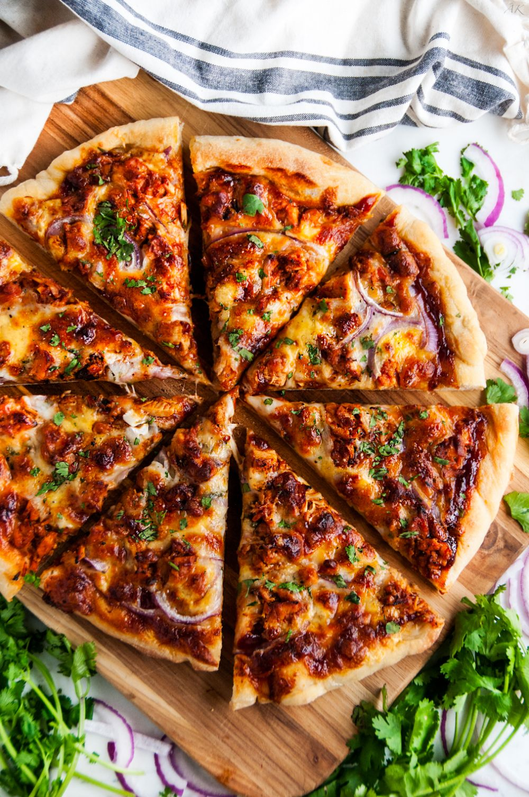
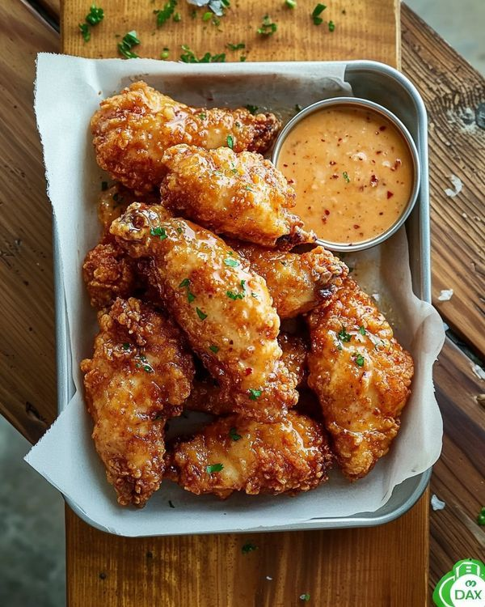
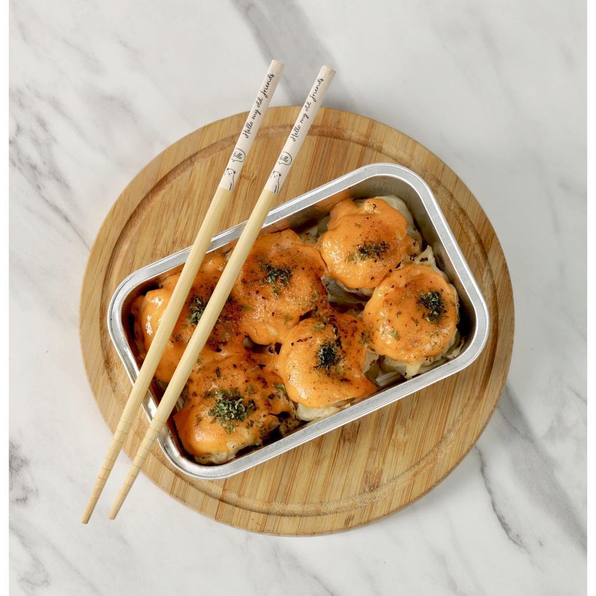

Our Blog & Articles

08 Februari 2023
Burger Sehat: Cara Membuat Burger Rendah Kalori Tanpa Mengurangi Rasa

29 Februari 2023
Rahasia Bumbu Kentang Goreng yang Wajib Dicoba

16 Maret 2024
10 Menu Pizza Unik untuk Ide Jualan
Jika kamu ingin memulai bisnis kuliner yang menarik perhatian, pizza bisa menjadi pilihan terbaik karena fleksibel, mudah divariasikan, dan selalu punya banyak penggemar. Namun, agar jualanmu berbeda dari yang lain, kamu perlu menawarkan menu pizza yang unik, kreatif, dan punya ciri khas sendiri. Dalam artikel ini, kamu akan menemukan sepuluh ide pizza inovatif yang bisa kamu kembangkan mulai dari rasa manis, gurih, fusion, hingga topping lokal yang sedang tren. Setiap ide bisa disesuaikan dengan modal, peralatan yang kamu punya, dan selera pasar di sekitar. Siap jadi inspirasi pizza spesial untuk usaha kamu? Mari kita mulai!

20 December 2024
Ayam Madu Lembut dan Manis: Ide Menu Modern

8 September 2024